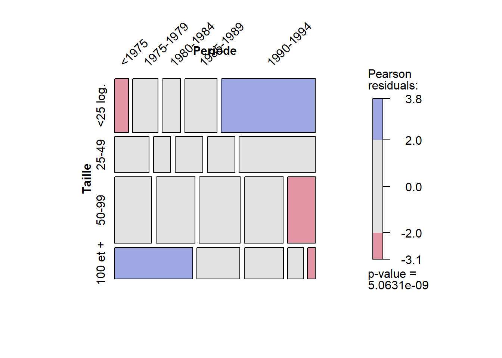
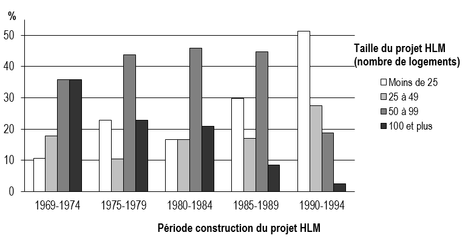

Cell Contents
|-------------------------|
| Count |
| Expected Values |
| Chi-square contribution |
| Row Percent |
| Column Percent |
| Total Percent |
| Residual |
|-------------------------|
Total Observations in Table: 279
| TabKhi2$Periode
TabKhi2$Taille | Av. 1975 | 1975-79 | 1980-84 | 1985-89 | 1990-94 | Row Total |
---------------|-----------|-----------|-----------|-----------|-----------|-----------|
< 25 log. | 6 | 11 | 8 | 14 | 41 | 80 |
| 16.06 | 13.76 | 13.76 | 13.48 | 22.94 | |
| 6.30 | 0.55 | 2.41 | 0.02 | 14.22 | |
| 7.50% | 13.75% | 10.00% | 17.50% | 51.25% | 28.67% |
| 10.71% | 22.92% | 16.67% | 29.79% | 51.25% | |
| 2.15% | 3.94% | 2.87% | 5.02% | 14.70% | |
| -10.06 | -2.76 | -5.76 | 0.52 | 18.06 | |
---------------|-----------|-----------|-----------|-----------|-----------|-----------|
25-49 | 10 | 5 | 8 | 8 | 22 | 53 |
| 10.64 | 9.12 | 9.12 | 8.93 | 15.20 | |
| 0.04 | 1.86 | 0.14 | 0.10 | 3.05 | |
| 18.87% | 9.43% | 15.09% | 15.09% | 41.51% | 19.00% |
| 17.86% | 10.42% | 16.67% | 17.02% | 27.50% | |
| 3.58% | 1.79% | 2.87% | 2.87% | 7.89% | |
| -0.64 | -4.12 | -1.12 | -0.93 | 6.80 | |
---------------|-----------|-----------|-----------|-----------|-----------|-----------|
50-99 | 20 | 21 | 22 | 21 | 15 | 99 |
| 19.87 | 17.03 | 17.03 | 16.68 | 28.39 | |
| 0.00 | 0.92 | 1.45 | 1.12 | 6.31 | |
| 20.20% | 21.21% | 22.22% | 21.21% | 15.15% | 35.48% |
| 35.71% | 43.75% | 45.83% | 44.68% | 18.75% | |
| 7.17% | 7.53% | 7.89% | 7.53% | 5.38% | |
| 0.13 | 3.97 | 4.97 | 4.32 | -13.39 | |
---------------|-----------|-----------|-----------|-----------|-----------|-----------|
100 et + | 20 | 11 | 10 | 4 | 2 | 47 |
| 9.43 | 8.09 | 8.09 | 7.92 | 13.48 | |
| 11.83 | 1.05 | 0.45 | 1.94 | 9.77 | |
| 42.55% | 23.40% | 21.28% | 8.51% | 4.26% | 16.85% |
| 35.71% | 22.92% | 20.83% | 8.51% | 2.50% | |
| 7.17% | 3.94% | 3.58% | 1.43% | 0.72% | |
| 10.57 | 2.91 | 1.91 | -3.92 | -11.48 | |
---------------|-----------|-----------|-----------|-----------|-----------|-----------|
Column Total | 56 | 48 | 48 | 47 | 80 | 279 |
| 20.07% | 17.20% | 17.20% | 16.85% | 28.67% | |
---------------|-----------|-----------|-----------|-----------|-----------|-----------|
Statistics for All Table Factors
Pearson's Chi-squared test
------------------------------------------------------------
Chi^2 = 63.54291 d.f. = 12 p = 5.063109e-09
Minimum expected frequency: 7.917563 5 Relation entre deux variables qualitatives
Dans le cadre de ce chapitre, nous présentons les deux principales méthodes permettant d’explorer les associations entre deux variables qualitatives : la construction d’un tableau de contingence et le test du khi-deux (\(\chi^2\), appelé aussi khi carré).
Liste des packages utilisés dans ce chapitre
-
gmodelspour construire des tableaux de contingence. -
vcdpour construire un graphique pour un tableau de contingence. -
DescToolspour calculer le khi-deux de Mantel-Haenszel. -
stargazerpour imprimer des tableaux.
Deux variables qualitatives sont-elles associées entre elles?
Plus spécifiquement, certaines modalités d’une variable qualitative sont-elles associées significativement à certaines modalités d’une autre variable qualitative?
Prenons l’exemple de deux variables qualitatives : l’une intitulée groupe d’âge comprenant trois modalités (15 à 29 ans, 30 à 44 ans, 45 à 64 ans); l’autre intitulée mode de transport habituel pour se rendre au travail comprenant quatre modalités (véhicule motorisé, transport en commun, vélo, marche).
Comparativement aux deux autres groupes, nous pourrions supposer que les jeunes se déplacent proportionnellement plus en modes de transport actif (vélo et marche) et en transport en commun. À l’inverse, il est possible que les 45 à 64 ans se déplacent majoritairement en véhicules motorisés.
Pour vérifier l’existence d’associations significatives entre les modalités de deux variables qualitatives, il est possible de construire un tableau de contingence (section 5.1), puis de réaliser le test du khi-deux (section 5.2).
5.1 Construction de tableau de contingence
Les données du tableau de contingence suivant décrivent 279 projets d’habitation à loyer modique (HLM) dans l’ancienne ville de Montréal, croisant les modalités de la période de construction (en colonne) et de la taille (en ligne) des projets HLM (Apparicio 2002). Les différents éléments du tableau sont décrits ci-dessous.
Les fréquences observées (Count au tableau ci-dessous), nommées communément \(f_{ij}\), correspondent aux observations appartenant à la fois à la ie modalité de la variable en ligne et à la je modalité de la variable en colonne. À titre d’exemple, nous comptons 14 projets HLM construits entre 1985 et 1989 comprenant moins de 25 logements.
Les marges du tableau sont les totaux pour chaque modalité en ligne (\(n_{i.}\)) et en colonne (\(n_{j.}\)). En guise d’exemple, sur les 279 projets HLM, 53 comprennent de 25 à 49 logements et 56 ont été construites entre 1968 et 1974. Bien entendu, la somme des marges en ligne (\(n_{i.}\)) est égale au nombre total d’observations (\(n_{ij}\)), tout comme la somme de marges en colonne (\(n_{.j}\)).
Trois pourcentages sont disponibles (total, en ligne, en colonne; Total Percent, Row Percent et Column Percent au tableau ci-dessous). Ils sont respectivement la fréquence observée divisée par le nombre d’observations (\(f_{ij}/n_{ij}\times100\)), par la marge en ligne (\(f_{ij}/n_{i.} \times 100\)) et en colonne (\(f_{ij}/n_{.j}\times100\)). En guise d’exemple, 5 % des 279 projets HLM ont été construites entre 1985 et 1989 et comprennent moins de 25 logements (pourcentage total, soit 14 / 279 × 100). Aussi, plus de la moitié des habitations de moins de 25 logements ont été construits entre 1990 et 1994 (pourcentage en ligne, 41 / 80 × 100). Finalement, près de 36 % des logements construits avant 1975 ont 100 logements et plus (20 / 56 × 100).
Les fréquences théoriques (Expected Values au tableau ci-dessous), représentent les valeurs que l’on devrait observer théoriquement s’il y avait indépendance entre les modalités des deux variables; autrement dit, si la répartition des deux modalités des deux variables était dû au hasard. Pour le croisement de deux modalités, la fréquence théorique est égale au produit des marges divisé par le nombre total d’observations (\(ft_{ij} = (n_{i.}n_{.j})/n_{ij}\)). Par exemple, la fréquence théorique pour le croisement des modalités moins de 25 logements et avant 1975 est égale à : (80 × 56) / 279 = 16,06. Nous observons ici que la valeur théorique (16,06) est bien supérieure à la valeur réelle (6). Nous avons donc moins de projets HLM de moins de 25 logements avant 1975 auxquels nous pourrions nous attendre du hasard.
La déviation (Residual au tableau ci-dessous) est la différence entre la fréquence observée et la fréquence théorique (\(f_{ij}-ft_{ij}\)). Plus la déviation est grande, plus nous nous écartons d’une situation d’indépendance entre les deux modalités i et j. La somme des déviations sur une ligne ou sur une colonne est nulle. Si la déviation ij est nulle, la fréquence théorique est égale à la fréquence observée, ce qui signifie qu’il y a indépendance entre les modalités i et j. Une déviation positive traduit, quant à elle, une attraction entre les modalités i et j ou, autrement dit, une surreprésentation du phénomène ij; tandis qu’une déviation négative renvoie à une répulsion entre les modalités i et j, soit une sous-représentation du phénomène ij. Dans le cas précédent, nous observions six habitations de moins de 25 logements construits avant 1975 et une fréquence théorique de 16,06. La déviation est donc -10,06, soit une sous-représentation du phénomène.
La contribution au khi-deux (Chi-square contribution au tableau ci-dessous) est égale à la déviation au carré divisée par la fréquence théorique : \(\chi_{ij}^2 = (f_{ij}-ft_{ij})^2/ft_{ij}\). Plus sa valeur est forte, plus il y a association entre les deux modalités. La somme des contributions au khi-deux représente le khi-deux total pour l’ensemble du tableau de contingence (ici à 63,54), que nous aborderons dans la section suivante.
5.2 Test du khi-deux
Avec le test du khi-deux, nous postulons qu’il y a indépendance entre les modalités des deux variables qualitatives, soit l’hypothèse nulle (H0). Puis, nous calculons le nombre de degrés de liberté : \(DL = (n-1)(l-1)\), avec \(l\) et \(n\) étant respectivement les nombres de modalités en ligne et en colonne. Pour notre tableau de contingence, nous avons 12 degrés de liberté : \((4-1)(5-1)=12\).
À partir du nombre de degrés de liberté et d’un seuil critique de significativité (prenons 5 % ici), nous pouvons trouver la valeur critique de khi-deux dans la table des valeurs critiques du khi-deux, soit 21,03 (section 14.1). Puisque la valeur du khi-deux calculée dans le tableau de contingence (63,54) est bien supérieure à celle obtenue dans le tableau des valeurs critiques (21,03), nous pouvons rejeter l’hypothèse d’indépendance au seuil de 5 %. Autrement dit, si les deux variables n’étaient pas associées, nous aurions eu moins de 5 % de chances de collecter des données avec ce niveau d’association, ce qui nous permet de rejeter l’hypothèse nulle (absence d’association). Notez que le test reste significatif avec des seuils de 1 % (p = 0,01) et 0,1 % (p = 0,001) puisque les valeurs critiques sont de 26,22 et de 32,91.
Bien entendu, une fois que nous connaissons le nombre de degrés de liberté, nous pouvons directement calculer les valeurs critiques pour différents seuils de signification et éviter ainsi de recourir à la table du du khi-deux. Dans la même veine, nous pouvons aussi calculer la valeur de p d’un tableau de contingence en spécifiant le nombre de degrés de liberté et la valeur du khi-deux obtenue.
cat("Valeurs critiques du khi-deux avec le nombre de degrés de liberté", "\n",
round(qchisq(p=0.95, df=12, lower.tail = FALSE),3), "avec p=0,05", "\n",
round(qchisq(p=0.99, df=12, lower.tail = FALSE),3), "avec p=0,01", "\n",
round(qchisq(p=0.999, df=12, lower.tail = FALSE),3), "avec p=0,0001")Valeurs critiques du khi-deux avec le nombre de degrés de liberté
5.226 avec p=0,05
3.571 avec p=0,01
2.214 avec p=0,0001cat("Valeur de p du khi-deux obtenu (63,54291) avec 12 degrés de liberté :", "\n",
pchisq(q=63.54291, df=12, lower.tail = FALSE))Valeur de p du khi-deux obtenu (63,54291) avec 12 degrés de liberté :
5.063101e-09Autres mesures d’association
Outre le khi-deux, d’autres mesures d’association permettent de mesurer le degré d’association entre deux variables qualitatives. Les plus courantes sont reportées dans le tableau 5.1. À des fins de comparaison, le khi-deux décrit précédemment est aussi reporté sur la première ligne du tableau.
| Statistique | Formule | Propriété et interprétation |
|---|---|---|
| Khi-deux | \(\chi^2 = \sum \frac{(f_{ij}-ft_{ij})^2}{ft_{ij}}\) | Mesure classique du khi-deux calculée à partir des différences entre les fréquences observées et attendues. Valeur de p disponible. |
| Ratio de vraisemblance du khi-deux | \(G^2 = 2 \sum f_{ij} \ln{(\frac{f_{ij}}{ft_{ij}})}\) | Calculé à partir du ratio entre les fréquences observées et attendues. Valeur de p disponible. |
| khi-deux de Mantel-Haenszel | \(Q_{MH}=(N−1)r^2\) | avec r étant le coefficient de corrélation entre les deux variables qualitatives; par exemple, entre les valeurs des modalités de 1 à 5 de la variable période de construction et celles de 1 à 4 de la variable taille du projet HLM. Ce coefficient est très utile quand les deux variables qualitatives ne sont pas nominales, mais ordinales. Valeur de p disponible. |
| Corrélation polychorique | Obtenue itérativement par maximum de vraisemblance | Dans le même esprit que le khi-deux de Mantel-Haenszel, la corrélation polychorique s’applique à deux variables ordinales. Plus spécifiquement, elle formule le postulat que deux variables théoriques normalement distribuées ont été mesurées de façon approximative avec deux échelles ordinales. Par exemple, en psychologie, le sentiment de bien-être et le sentiment de sécurité peuvent être conceptualisés comme deux variables continues normalement distribuées. Cependant, les mesurer directement est très difficile, nous avons donc recours à des échelles de Likert allant de 1 à 10. Pour cet exemple, il est pertinent d’utiliser la corrélation polychorique. Comme pour une corrélation de Pearson, la corrélation polychorique varie de -1 à 1, une valeur négative indiquant une relation inverse entre les deux variables théoriques et inversement. Valeur de p disponible. |
| Coefficient Phi | \(\phi=\sqrt{\frac{\chi^2}{n}}\) | Simplement le khi-deux divisé par le nombre d’observations. Si les deux variables qualitatives comprennent deux modalités chacune alors \(\phi\) varie de −1 à 1; sinon, de 0 à \(min(\sqrt{c-1}, \sqrt{l-1})\) avec c et l étant le nombre de modalités en colonne et en ligne. Par conséquent, ce coefficient est surtout utile pour les tableaux comprenant deux modalités pour chacune des variables. Pas de valeur de p disponible. |
| V de Cramer | \(V=\sqrt{\frac{\chi^2/n}{min(c-1,l-1)}}\) | Il représente un ajustement du coefficient Phi et varie de 0 à 1. Plus sa valeur est forte, plus les deux variables sont associées. À la lecture des deux formules, vous constaterez que, pour un tableau de 2x2, la valeur du V de Carmer sera égale à celle du Coefficient Phi. Pas de valeur de p disponible. |
5.3 Mise en œuvre dans R
Pour calculer le khi-deux entre deux variables qualitatives, nous utilisons la fonction de base :
chisq.test(x = ..., y = ...) qui renvoie le nombre de degrés de liberté, les valeurs du khi-deux et de p.
# Importation du csv
dataHLM <- read.csv("data/bivariee/hlm.csv")
# Calcul du khi-deux avec la fonction de base chisq.test
chisq.test(x = dataHLM$Taille, y = dataHLM$Periode)
Pearson's Chi-squared test
data: dataHLM$Taille and dataHLM$Periode
X-squared = 63.543, df = 12, p-value = 5.063e-09Pour la construction du tableau de contingence, deux options sont possibles dépendamment de la structure de votre tableau de données. Premier cas de figure : votre tableau comprend une ligne par observation avec les différentes modalités dans deux colonnes (ici Periode et Taille). Dans la syntaxe ci-dessous, pour chacune des deux variables qualitatives, nous créons un facteur afin de spécifier un intitulé à chaque modalité (factor(levels =c(....), labels = c(..)). Puis, nous utilisons la fonction CrossTable du package gmodels. Pour obtenir les fréquences théoriques, les contributions locales au khi-deux et les déviations, nous spécifions les options suivantes : expected = TRUE, chisq=TRUE, resid=TRUE.
Periode Taille
1 5 1
2 5 1
3 5 2
4 5 1
5 5 1
6 5 2# La variable Periode comprend 5 modalités (de 1 à 5)
table(dataHLM$Periode)
1 2 3 4 5
56 48 48 47 80 # La variable Taille comprend 4 modalités (de 1 à 4)
table(dataHLM$Taille)
1 2 3 4
80 53 99 47 # Création d'un facteur pour les cinq modalités de la période de construction
dataHLM$Periode <- factor(dataHLM$Periode,
levels = c(1,2,3,4,5),
labels = c("<1975",
"1975-1979",
"1980-1984",
"1985-1989",
"1990-1994"))
# Création d'un facteur pour les quatre modalités de la taille des habitations
dataHLM$Taille <- factor(dataHLM$Taille,
levels = c(1,2,3,4),
labels = c("<25 log.",
"25-49",
"50-99",
"100 et +"))
# Pour construire un tableau de contingence, nous utilisons
# la fonction CrossTable du package gmodels.
# Les deux lignes ci-dessous sont mises en commentaire pour ne pas répéter le tableau.
# CrossTable(x=dataHLM$Taille, y = dataHLM$Periode, digits = 2,
# expected = TRUE, chisq = TRUE, resid = TRUE, format="SPSS")Deuxième cas de figure : vous disposez déjà d’un tableau de contingence, soit les fréquences observées (\(f_{ij}\)). Nous n’utilisons donc pas la fonction CrossTable, mais directement la fonction chisq.test.
# Importation des données
df1 <- read.csv("data/bivariee/data_transport.csv", stringsAsFactors = FALSE)
df1 # Visualisation du tableau ModeTransport Homme Femme
1 Automobile, camion ou fourgonnette - conducteur 689400 561830
2 Automobile, camion ou fourgonnette - passager 21315 40010
3 Transport en commun 181435 238330
4 A pied 43715 54360
5 Bicyclette 24295 13765
6 Autre moyen 8395 6970Matrice <- as.matrix(df1[, c("Homme" , "Femme")])
dimnames(Matrice) <- list(unique(df1$ModeTransport), Sexe=c("Homme" , "Femme"))
# Notez que vous pouvez saisir vos données directement si vous avez peu d'observations
Femme <- c(689400, 21315, 181435, 43715, 24295, 8395) # Vecteur de valeurs pour les femmes
Homme <- c(561830, 40010, 238330, 54360, 13765, 6970) # Vecteur de valeurs pour les hommes
Matrice <- as.table(cbind(Femme, Homme)) # Création du tableau
# Nom des deux variables et de leurs modalités respectives
dimnames(Matrice) <- list(Transport=c("Automobile (conducteur)",
"Automobile (passager)",
"Transport en commun",
"À pied",
"Bicyclette",
"Autre moyen"),
Sexe=c("Homme" , "Femme"))
# Test du khi-deux
test <- chisq.test(Matrice)
print(test)
Pearson's Chi-squared test
data: Matrice
X-squared = 29134, df = 5, p-value < 2.2e-16# Fréquences observées (Fij)
test$observed Sexe
Transport Homme Femme
Automobile (conducteur) 689400 561830
Automobile (passager) 21315 40010
Transport en commun 181435 238330
À pied 43715 54360
Bicyclette 24295 13765
Autre moyen 8395 6970# Fréquences théoriques (FTij)
round(test$expected,0) Sexe
Transport Homme Femme
Automobile (conducteur) 643313 607917
Automobile (passager) 31530 29795
Transport en commun 215820 203945
À pied 50425 47650
Bicyclette 19568 18492
Autre moyen 7900 7465# Déviations (Fij - FTij)
round(test$observed-test$expected,0) Sexe
Transport Homme Femme
Automobile (conducteur) 46087 -46087
Automobile (passager) -10215 10215
Transport en commun -34385 34385
À pied -6710 6710
Bicyclette 4727 -4727
Autre moyen 495 -495# Contributions au khi-deux
round((test$observed-test$expected)^2/test$expected,2) Sexe
Transport Homme Femme
Automobile (conducteur) 3301.74 3493.98
Automobile (passager) 3309.37 3502.05
Transport en commun 5478.22 5797.18
À pied 892.81 944.80
Bicyclette 1141.71 1208.19
Autre moyen 31.04 32.85# Marges en ligne et en colonne
colSums(Matrice) Homme Femme
968555 915265 rowSums(Matrice)Automobile (conducteur) Automobile (passager) Transport en commun
1251230 61325 419765
À pied Bicyclette Autre moyen
98075 38060 15365 # Grand total
sum(Matrice)[1] 1883820 Sexe
Transport Homme Femme
Automobile (conducteur) 36.60 29.82
Automobile (passager) 1.13 2.12
Transport en commun 9.63 12.65
À pied 2.32 2.89
Bicyclette 1.29 0.73
Autre moyen 0.45 0.37 Sexe
Transport Homme Femme
Automobile (conducteur) 55.10 44.90
Automobile (passager) 34.76 65.24
Transport en commun 43.22 56.78
À pied 44.57 55.43
Bicyclette 63.83 36.17
Autre moyen 54.64 45.36 Sexe
Transport Homme Femme
Automobile (conducteur) 71.18 58.01
Automobile (passager) 2.33 4.37
Transport en commun 18.73 24.61
À pied 4.78 5.94
Bicyclette 2.51 1.42
Autre moyen 0.92 0.76Pour obtenir les autres mesures d’association (tableau 5.2), nous pourrons utiliser la syntaxe suivante :
df1 <- read.csv("data/bivariee/hlm.csv")
# Fonction pour calculer les autres mesures d'association
AutresMesuresKhi2 <- function(x, y){
testChi2 <- chisq.test(x, y) # Calcul du khi-deux
n <- sum(testChi2$observed) # Nombre d'observations
nc <- ncol(testChi2$observed) # Nombre de colonnes
l <- nrow(testChi2$observed) # Nombre de lignes
dl <- (nc-1)*(l-1) # Nombre de degrés de libertés
chi2 <- testChi2$statistic # Valeur du khi-deux
Pchi2 <- testChi2$p.value # P pour le khi-deux
#Ratio de vraisemblance du khi-deux
G <- 2*sum(testChi2$observed*log(testChi2$observed/testChi2$expected)) # G2
PG <- pchisq(G, df=dl, lower.tail = FALSE) # P pour le G22
# khi-deux de Mantel-Haenszel avec le package DescTools
MHTest <- DescTools::MHChisqTest(testChi2$observed)
MH <- MHTest$statistic
PMH <- MHTest$p.value
# Coefficient de correlation polychorique
df1 <- data.frame("x" = as.factor(x),
"y" = as.factor(y))
polychoricCorr <- correlation::cor_test(df1,"x" , "y", method = "polychoric")
polyR <- polychoricCorr$rho
polyP <- polychoricCorr$p
# Coefficient Phi et V de Cramer
phi <- sqrt(chi2/n)
vc <- sqrt(chi2/(n*min(nc-1,l-1)))
# Tableau pour les résultats
dfsortie <- data.frame(
Statistique = c("Khi-deux",
"Ratio de vraisemblance du khi-deux",
"Khi-deux de Mantel-Haenszel",
"Corrélation Polychorique",
"Coefficient de Phi",
"V de Cramer"),
Valeur = round(c(chi2, G, MH, polyR, phi, vc),3),
P = round(c(Pchi2, PG, PMH, polyP , NA, NA),10))
return(dfsortie)
}
dfkhi2 <- AutresMesuresKhi2(df1$Periode, df1$Taille)
# Impression du tableau avec le package stargazer
library(stargazer)
stargazer(dfkhi2, type = "text", summary = FALSE, rownames = FALSE, align = FALSE, digits = 3,
title = "Mesures d'association entre les deux variables qualitatives")| Statistique | Valeur | P |
|---|---|---|
| Khi-deux | 63.543 | 0 |
| Ratio de vraisemblance du khi-deux | 67.286 | 0 |
| Khi-deux de Mantel-Haenszel | 48.486 | 0 |
| Corrélation Polychorique | -0.479 | 0 |
| Coefficient de Phi | 0.477 | |
| V de Cramer | 0.276 |
5.4 Interprétation d’un tableau de contingence
Nous vous proposons une démarche très simple pour vérifier l’association entre deux variables qualitatives avec les deux étapes suivantes :
Nous posons l’hypothèse nulle (H0), soit l’indépendance entre les deux variables.
Si la valeur du khi-deux total du tableau de contingence est inférieure à la valeur critique du khi-deux avec p = 0,05 et le nombre de degrés de liberté de la table des valeurs critiques de khi-deux, alors il y a bien indépendance. La valeur de p est alors supérieure à 0,05. L’analyse s’arrête donc là! Autrement dit, il n’est pas nécessaire d’analyser le contenu de votre tableau de contingence puisqu’il n’y a pas d’association significative entre les modalités des deux variables. Vous pouvez simplement signaler que selon les résultats du test du khi-deux, il n’y a pas d’association significative entre les deux variables (\(\chi\) = … avec p = …).
S’il y a dépendance (\(khi_{observé}^2 > khi_{critique}^2\)), trouvez les cellules ij où les contributions au khi-deux sont les plus fortes, c’est-à-dire où les associations entre les modalités i de la variable en ligne et les modalités j de la variable en colonne sont les plus marquées. Pour ces cellules, le phénomène ij est surreprésenté si la déviation est positive ou sous-représenté si la déviation est négative. Commentez ces associations et utilisez les pourcentages en ligne ou en colonne pour appuyer vos propos.
Repérer les contributions au khi-deux les plus importantes
Pour repérer rapidement les cellules où les contributions au khi-deux sont les plus fortes, vous pouvez construire un graphique avec la fonction mosaic du package vcd. À la figure 5.1, la taille des rectangles représente les effectifs entre les deux modalités tandis que les associations sont représentées comme suit : en gris lorsqu’elles ne sont pas significatives, en rouge pour des déviations significatives et négatives et en bleu pour des déviations significatives et positives.
library(vcd)
mosaic(~ Taille+Periode,
data = dataHLM, shade = TRUE, legend = TRUE,
labeling = labeling_border(rot_labels = c(45, 90),
just_labels = c("left", "center")))
Exemple d’interprétation. « Les résultats du test du khi-deux signalent qu’il existe des associations entre les modalités de la taille et de la période de construction des projets d’habitation (\(\chi\) = 63,5, p < 0,001). Les fortes contributions au khi-deux et le signe positif ou négatif des déviations correspondantes permettent de repérer cinq associations majeures entre les modalités de taille et de période de construction des projets HLM : 1) la répulsion entre les projets d’habitation de moins de 25 logements et la période de construction 1964-1974; 2) l’attraction entre les projets d’habitation de 100 logements et plus et la période de construction de 1969-1974; 3) l’attraction entre les projets d’habitation de moins de 25 logements et la période de construction de 1990-1994; 4) la répulsion entre les projets d’habitation de 50 à 99 logements et la période de construction 1990-1994; 5) la répulsion entre les projets d’habitation de 100 logements et plus et la période de construction 1990-1994. On observe donc une tendance bien marquée dans l’évolution du type de construction entre 1970 et 1994 : entre 1969 et 1974, on a construit de grandes habitations dépassant souvent 100 logements; du milieu des années 1970 à la fin des années 1980, on privilégie la construction d’habitations de taille plus modeste, entre 50 et 100 logements; tandis qu’au début des années 1990, on opte plutôt pour des habitations de taille réduite (moins de 50 logements). Quelques chiffres à l’appui : sur les 56 habitations réalisées entre 1969 et 1974, 20 ont plus de 100 logements, 20 comprennent entre 50 et 99 logements et seules 10 ont moins de 25 logements. Près de la moitié des habitations construites entre 1975 et 1989 regroupent 50 à 99 logements (43,8 % pour la période 1975-1979, 45,8 % pour 1980-1984 et 44,7 % pour 1985-1989). Par contre, 51 % des habitations érigés à partir de 1990 disposent de moins de 25 logements » (Apparicio (2002), p. 117-118). Notez que cette évolution décroissante est aussi soutenue par le coefficient négatif de la corrélation polychorique.
Vous pouvez aussi construire un graphique pour appuyer vos constats, soit avec les pourcentages en ligne ou en colonne (figure 5.2 tirée de Apparicio (2002)).

Comment rapporter succinctement les résultats d’un test du khi-deux?
Le test du khi-deux a été réalisé pour examiner la relation entre la taille et la période de construction des habitations HLM. Cette relation est significative : \(\chi^2\)(12, N = 279) = 63,5, p < 0,001. Plus les projets ont été construites récemment, plus ils sont de taille réduite.
Pour un texte en anglais, consultez https://www.socscistatistics.com/tutorials/chisquare/default.aspx.
5.5 Quiz de révision du chapitre
Pour analyser la relation entre deux variables qualitatives, vous utilisez :
Relisez au besoin l’introduction du chapitre 5.
Dans un tableau de contingence, quels sont les éléments disponibles?
Relisez au besoin la section 5.1.
La corrélation polychorique est particulièrement bien adaptée pour mesurer l’association entre deux variables qualitatives :
Relisez au besoin l’encadré à la section 5.2.
S’il y a indépendance entre les deux variables qualitatives (khi-deux observé inférieur au khi-deux critique), il n’est pas nécessaire d’analyser en détail le tableau de contingence.
Relisez au besoin la section 5.4.